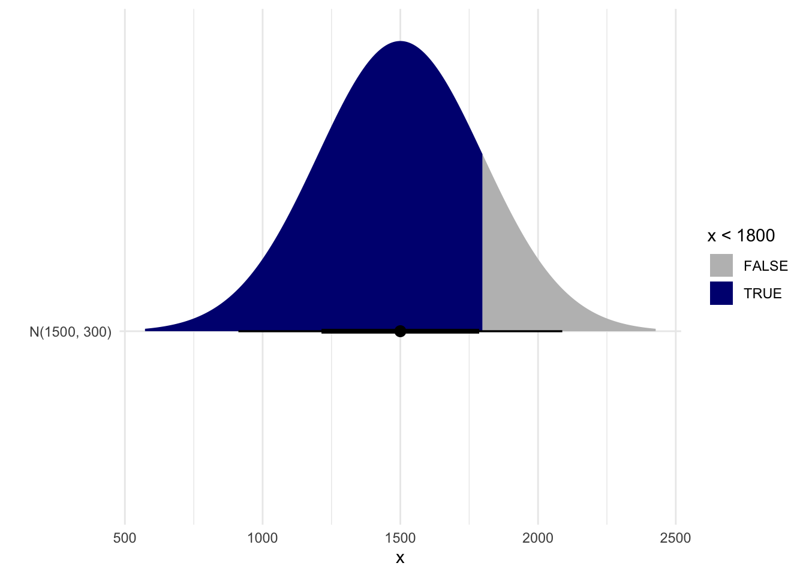

Practice using the normal distribution to calculate probabilities and cutoff values.
Author
Affiliation
Katie Fitzgerald
Azusa Pacific University
Published
October 16, 2024
Action required
To get started on Lab 03:
Log-in to Posit Cloud and navigate to the MATH_130_F24 workspace
Click “Start” on Lab 03
In the Files pane (lower right quadrant), click the file “Lab_03.qmd” to open it
Click the grey/white Settings icon and select “Preview in Viewer Pane”
Click the Render button (blue arrow) to Render the .qmd into an html. The html should pop up on the right-hand side of Posit Cloud in the Viewer Pane.
Introduction
This lab will help you practice computing probabilities and percentile cut-offs from the normal distribution. Throughout this lab, you can use the normal distribution applet to verify that your R code is giving you what you expect. This whole lab will make use of only two functions:
pnorm() for computing probabilities/percentages, and
qnorm() for computing cut-off values
Examples from lecture
Example 1: SAT Scores
Research question
SAT scores are distributed nearly normally with mean 1500 and standard devia-on 300. If Marcus scored an 1800, what percentile was he in? In other words, what percentage of people did he score better than?
pnorm(1800, mean =1500, sd =300)
[1] 0.8413447
Marcus scored better than 84.1% of people
Important
When working with the normal distribution, you should ALWAYS DRAW A PICTURE to help you reason about the question and verify if your answer makes sense.

Exercise 1
By default, does pnorm() tell you the probability to the LEFT or to the RIGHT of the cutoff? In other words, does it tell you the LOWER TAIL or UPPER TAIL probability?
If you want to find the probability that falls ABOVE a cutoff value, what should you add to the pnorm() code? Hint: see page 13 of lecture notes
If your cutoff value is less than the mean, will the probability that falls BELOW your cutoff be <50%, =50%, >50%, or impossible to tell?
If your cutoff value is less than the mean, will the probability that falls ABOVE your cutoff be <50%, =50%, >50%, or impossible to tell?
Example 2: Heinz ketchup bottles
Research question
At Heinz ketchup factory the amounts which go into bottles of ketchup are supposed to be normally distributed with mean 36 oz. and standard deviation 0.11 oz. Once every 30 minutes a bottle is selected from the production line, and its contents are noted precisely. If the amount of ketchup in the bottle is below 35.8 oz. or above 36.2 oz., then the bottle fails the quality control inspection.
What percent of bottles have less than 35.8 ounces of ketchup?
pnorm(35.8, mean =36, sd =0.11)
[1] 0.03451817
What percent of bottles have MORE than 36.2 ounces of ketchup?
Two ways to find the same answer:
pnorm(36.2, mean =36, sd =0.11, lower.tail =FALSE)
[1] 0.03451817
1-pnorm(36.2, mean =36, sd =0.11)
[1] 0.03451817
Example 3: Body temperatures
Research question
Body temperatures of healthy humans are distributed nearly normally with mean 98.2 (degrees Fahrenheit) and standard deviation 0.73.
What is the cutoff for the lowest 3% of human body temperatures?
qnorm(0.03, mean =98.2, sd =0.73)
[1] 96.82702
What is the cutoff for the highest 10% of human body temperatures?
Two ways to find the same answer:
qnorm(0.10, mean =98.2, sd =0.73, lower.tail =FALSE)
[1] 99.13553
qnorm(0.90, mean =98.2, sd =0.73)
[1] 99.13553
Exercise 2
Explain where the 0.90 came from in the last qnorm() code above.
Explain why the following code is INCORRECT:
1-qnorm(.10, mean =98.2, sd =0.73)
[1] -96.26447
New Context: Birthweight
Exercise 3
Suppose that birthweights of newborn babies in the United States follow a normal distribution with mean 3300 grams and standard deviation 500 grams. Babies who weigh less than 2500 grams at birth are classified as low birthweight.
Use code to answer each of the following:
How many standard deviations below the mean is a baby classified as low birthweight? Hint, you don’t need to use pnorm() or qnorm() here, just use R as a calculator.
What percentage of newborn babies weigh less than 2500 grams?
What is the probability that a randomly selected newborn baby weighs more than 10 pounds?
What percentage of newborn babies weigh between 3000 and 4000 grams?
How little must a baby weight to be among the lightest 2.5% of all newborns? Convert your answer to pounds. Google to figure out the conversion!
How much must a baby weigh to be among the heaviest 10%? Convert your answer to pounds.
Z-score practice
Recall that Z-scores are normally distributed with mean 0 and standard deviation 1. Find each of the following. Note, you should draw a picture to help you visualize what you are trying to find for each question (you do not need to turn in your sketches).
Exercise 4
Use code to compute each of the following probabilities:
\(P(Z < 1.25)\)
\(P(Z > 1.25)\)
\(P(Z < -1.25)\)
\(P(Z > -1.25)\)
Explain how your answers in parts a & b relate to one another
Comment on how AND why your answers to a & b relate to your answers to Tasks c & d
Exercise 5
Use code to compute each of the following probabilities:
\(P(-1 < Z < 1)\)
\(P(-2 < Z < 2)\)
\(P(-3 < Z < 3)\)
Explain how your results in a - c relate to the Empirical Rule
Exercise 6
Use code to find the following probabilities:
\(P(-1.645 < Z < 1.645)\)
\(P(-1.96 < Z < 1.96)\)
\(P(-2.576 < Z < 2.576)\)
Use the qnorm() function to find:
the 95th percentile of Z-scores
the 5th percentile of Z-scores
the 2.5th percentile of Z-scores
the 97.5th percentile of Z-scores
the 99.5th percentile of Z-score
Comment on how AND why your answers to parts d - h relate to one another.
Comment on how AND why your answers to parts d - h relate to parts a - c.